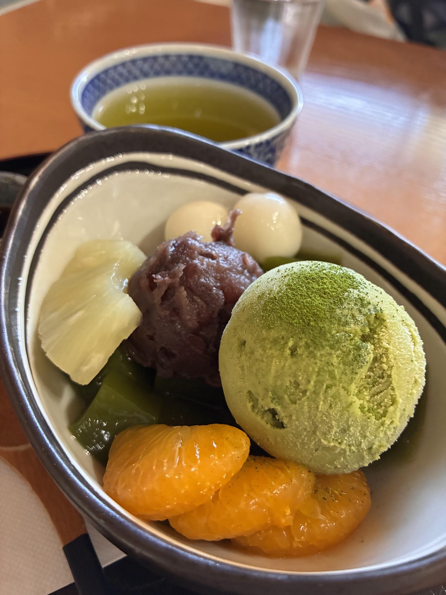

和風喫茶・甘味処
紺の暖簾をくぐれば、和みのひとときが待っています。
千葉県我孫子市白山、日本家屋のたたずまいを残す甘味処・喫茶「茶処喫茶 たけやま」です。
お店紹介
和と洋がやさしく溶け合う、甘味処のひととき
瓦屋根と白壁の日本家屋に、紺色の暖簾がひとつ。その先には、障子の光と和紙の丸提灯が灯る、落ち着いた店内が広がります。
茶処喫茶 たけやまは、抹茶を使った甘味からおにぎり中心のお食事、そしてコーヒーと焼き菓子まで、和と洋のメニューを一つ屋根の下でお楽しみいただける甘味処・喫茶です。散策の合間のひと休みにも、しっかりとした食事どきにも、それぞれの過ごし方に寄り添う場所でありたいと考えています。

撮影: F- Kono(Googleマップ)

Reviews
お客様の声
こちらのクチコミはGoogleに投稿された内容をそのまま掲載しており、恣意的な抜粋・要約は行っておりません(日本語以外の原文はGoogle公式の翻訳機能による訳文です)。
基本お茶屋さんですが、喫茶コーナーがあり、モーニング時間に利用させていただきました。おれおにぎりがメインのたけやまセットをチョイス。2種類のおにぎりを選べますが、訪問日は7種の選択肢がありました。サイクリング中でしたので、温かいおにぎりやお味噌汁は最高でした。和のテイストの喫茶はなかなか無いので、落ち着いた店内でホットひと息つくことが出来ました。
Googleクチコミより
【喫茶 たけやま】 • たけやまセット 990円 • おにぎり おかかこんぶ 280円 『おにぎりと手作りのお惣菜が楽しめるたけやまセット』 千葉県我孫子市にある喫茶店。 我孫子駅から徒歩約15分の場所にある 「喫茶 たけやま」さんに行ってきました！ ◼️たけやまセット 990円 たけやまセットはおにぎり2個に 味噌汁、玉子焼き、手作りおそうざい 深蒸し煎茶、漬物が付いています！ おにぎりはツナねぎみそと じゃこ生姜の2個を選びました。 おにぎりは握り立てのお米がふっくら 海苔がパリッとした状態で提供され どちらの具もお米に抜群に合う 味付けでかなりクセになります！ この日の味噌汁は冷や汁でした！ かなり暑い日だったので冷たさと さっぱりさが最高で身体に沁みました！ 玉子焼きはほんのり温かさがあり 絶妙な甘めの味付けで堪りません！ この日の手作りおそうざいは 鶏肉と冬瓜の煮物であっさりとした 味付けでしっかりと煮込まれた 柔らかい食感で美味しかったです！ 深蒸し煎茶は渋めの苦味があり 食後に丁度良く美味しい一杯でした！ ◼️その他・情報 住所：千葉県我孫子市白山1-7-12 営業時間：9:00〜17:00 定休日：水曜日
Googleクチコミより(本文中の価格・営業時間等は投稿者ご本人の発言です)
日曜日のランチで利用しました🍙 12時半過ぎで、ご飯系は単品かBセットのみで他は売り切れでした〜！ おにぎりはお米の硬さがちょうどよくとっても美味しくて海苔もパリパリでした！お味噌汁は優しいお味✨ 次はクリームあんみつ食べたいです！また行きたいと思います！
Googleクチコミより
手賀沼をなんとなく眺めながらお茶をすする。寒天系に小豆、お茶はやっぱりいいですねとなる。 他にもおにぎりセット、夏はカキ氷等もあります。甘味処です。カフェと言うより甘味処気分でゆっくり。 駐車場はないです。前に公園のコインパークあり。
Googleクチコミより
2024-10 日曜の12時前にお邪魔。車は迎え側の有料駐車場に。たけやまセットは12時半くらいで完売。他のセットはまだあったみたい。6席テーブルと4席テーブル、2席テーブルは4つくらい。カウンターが4。 おにぎりは梅と海苔を選択。どれを選んでも美味しそう。食後にほうじ茶が出るので、追加の単品でケーキ注文。ケーキ美味しいのでオススメ。 12時くらいから一気に混むのでその前に行ったほうがいい。
Googleクチコミより